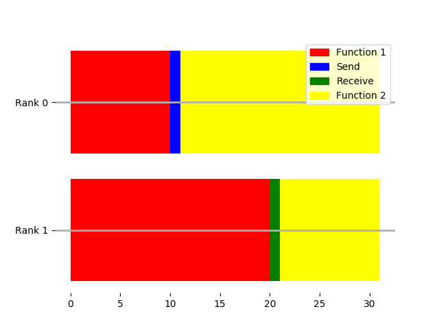

Close
Close

Point to point communication
Many point-2-point communication schemes
Can you think of two behaviours for message passing?

- Process 0 can (i) give message and then either (ii) leave or (iii) wait for acknowledgements
- Process 1 can (i) receive message
- MPI can (i) receive message, (ii) deliver message, (iii) deliver acknowledgments
Blocking synchronous send
| Stage | Figure |
|---|---|
| a. 0, 1, and MPI stand ready: | |
| b. message dropped off by 0: | |
| c. transit: | |
| d. message received by 1 | |
| e. receipt received by 0 |
Blocking send
| Stage | Figure |
|---|---|
| a. 0, 1, and MPI stand ready: | |
| b. message dropped off by 0: | |
| c. transit, 0 leaves |  |
| d. message received by 1 |
Non-blocking send
| Stage | Figure |
|---|---|
| a. 0, 1, and MPI stand ready: |  |
| b. 0 leaves message in safebox | |
| c. transit |  |
| d. message received by 1 | |
| e. receipt placed in safebox |
Blocking synchronous send
int MPI_Ssend(const void *buf, int count, MPI_Datatype datatype, int dest, int tag,
MPI_Comm comm)
| Parameter | Meaning |
|---|---|
| buf | Pointer to buffer. Always void because practical C is not type safe. |
| count | Size of the buffer. I.e. length of the message to send, in units of the specified datatype (not bytes) |
| datatype | Encodes type of the buffer. MPI_INT for integers, MPI_CHAR for characters. Lots of others. |
| dest | Rank of the receiving process |
| tag | A tag for message book-keeping |
| comm | The communicator -- usually just MPI_COMM_WORLD |
| return | An error tag. Equals MPI_SUCCESS on success. |
Blocking receive
int MPI_Recv(void *buf, int count, MPI_Datatype datatype, int source, int tag,
MPI_Comm comm, MPI_Status *status)
Good for both synchronous and asynchonous communication
| Parameter | Meaning |
|---|---|
| buf | Pointer to receiving pre-allocated buffer |
| count | Size of the buffer. I.e. maximum length of the message to receive. See MPI_Get_count |
| datatype | Informs on the type of the buffer |
| source | Rank of the sending process |
| tag | A tag for message book-keeping |
| status | MPI_STATUS_IGNOREfor now. SeeMPI_Get_count`. |
| comm | The communicator |
| return | Error tag |
Example: Blocking synchronous example
Inside a new section in the test framework:
std::string const peace = "I come in peace!";
if(rank == 0) {
int const error = MPI_Ssend(
(void*) peace.c_str(), peace.size() + 1, MPI_CHAR, 1, 42, MPI_COMM_WORLD);
// Here, we guarantee that Rank 1 has received the message.
REQUIRE(error == MPI_SUCCESS);
}
if(rank == 1) {
char buffer[256];
int const error = MPI_Recv(
buffer, 256, MPI_CHAR, 0, 42, MPI_COMM_WORLD, MPI_STATUS_IGNORE);
REQUIRE(error == MPI_SUCCESS);
CHECK(std::string(buffer) == peace);
}
Common bug: Set both sender and receiver to 0. What happens?
Example: Do you know your C vs C++ strings?
Why the +1?
int const error = MPI_Ssend(
(void*) peace.c_str(), peace.size() + 1, MPI_CHAR, 1, 42, MPI_COMM_WORLD);
. . .
Because C and C++ char const* strings are null-terminated to indicate the
string is finished, which adds an extra character. However, std::string
abstracts it away. And so its length does not include the null-termination.
Example: Causing a dead-lock
Watch out for order of send and receive!
Bad:
if(rank == 0) {
MPI_Ssend (sendbuf, count, MPI_INT, 1, tag, comm);
MPI_Recv (recvbuf, count, MPI_INT, 1, tag, comm, &status);
} else {
MPI_Ssend (sendbuf, count, MPI_INT, 0, tag, comm);
MPI_Recv (recvbuf, count, MPI_INT, 0, tag, comm, &status);
}
Good:
if(rank == 0) {
MPI_Ssend (sendbuf, count, MPI_INT, 1, tag, comm);
MPI_Recv (recvbuf, count, MPI_INT, 1, tag, comm, &status);
} else {
MPI_Recv (recvbuf, count, MPI_INT, 0, tag, comm, &status);
MPI_Ssend (sendbuf, count, MPI_INT, 0, tag, comm);
}
Send vs SSend
Why would we use Send instead of SSend?
std::string peace = "I come in peace!";
if(rank == 0) {
int const error = MPI_Send(
(void*) peace.c_str(), peace.size() + 1, MPI_CHAR, 1, 42, MPI_COMM_WORLD);
// We do not guarantee that Rank 1 has received the message yet
// But nor do we necessarily know it hasn't.
// But we are definitely allowed to change the string, as MPI promises
// it has been buffered
peace = "Shoot to kill!"; // Safe to reuse the send buffer.
REQUIRE(error == MPI_SUCCESS);
}
if(rank == 1) {
char buffer[256];
int const error = MPI_Recv(
buffer, 256, MPI_CHAR, 0, 42, MPI_COMM_WORLD, MPI_STATUS_IGNORE);
REQUIRE(error == MPI_SUCCESS);
CHECK(std::string(buffer) == peace);
}
Both guarantee the buffer is safe to reuse. Send makes no guarantee as to whether it returns early or not. But SSend forces a synchronisation point: the codes reach the matching places, with all processes waiting until all reach that point.
It may come out slightly faster to use Send, since having a synchronisation point when you don't need one can slow things down: Suppose (A) runs slightly faster, then (B) does; at the end, they've both been running fully efficiently.

Wth a synchronisation point in between, you'll have wasted time:

This is only important when there is noise or variability in the execution time on different processes, but this is often the case.
So unnecessary synchronisation points are bad. The MPI Implementation may choose to buffer, or synchronise in Send; you're letting MPI guess.
However, if you want to fine tune this to get the best performance, you should use ISend.
Non-blocking: ISend/IRecv
With ISend, we indicate when we want the message to set off.
We receive a handle to the message, of type MPI_Request*
which we can use to require it has
been received, or check.
This produces more complicated code, but you can write code which overlaps calculation with communication: the message is travelling, while you get on with something else. We'll see a practical example of using this next lecture.
std::string peace = "I come in peace!";
if(rank == 0) {
MPI_Request request;
int error = MPI_Isend(
(void*) peace.c_str(), peace.size() + 1, MPI_CHAR, 1, 42,
MPI_COMM_WORLD, &request);
// We do not guarantee that Rank 1 has received the message yet
// We can carry on, and ANY WORK WE DO NOW WILL OVERLAP WITH THE
// COMMUNICATION
// BUT, we can't safely change the string.
REQUIRE(error == MPI_SUCCESS);
// Do some expensive work here
for (int i=0; i<1000; i++) {}; // BUSYNESS FOR EXAMPLE
MPI_Status status;
error = MPI_Wait(&request, &status);
REQUIRE(error == MPI_SUCCESS);
// Here, we run code that requires the message to have been
// successfully sent.
}
if(rank == 1) {
char buffer[256];
int const error = MPI_Recv(
buffer, 256, MPI_CHAR, 0, 42, MPI_COMM_WORLD, MPI_STATUS_IGNORE);
REQUIRE(error == MPI_SUCCESS);
CHECK(std::string(buffer) == peace);
}
int MPI_Isend(const void *buf, int count, MPI_Datatype datatype, int dest, int tag,
MPI_Comm comm, MPI_Request *request)
Pass the parcel: SendRecv
Consider a group of N processes in a ring: each has a value, and wants to "pass the parcel" to the left. How would you achieve this with SSend and Receive?
int message = rank*rank;
int received = -7;
// Define the ring
int left = rank-1;
int right = rank+1;
if (rank==0) {
left = size-1;
}
if (rank == size-1){
right = 0;
}
With synchronous calls each process can only either be sending or receiving. So the even processes need to send, while the odd ones receive, then vice-versa. This is clearly inefficient.
if (rank%2 == 0) {
int error = MPI_Ssend(
&message, 1, MPI_INT, left, rank, MPI_COMM_WORLD);
error = MPI_Recv(
&received, 1, MPI_INT, right, right, MPI_COMM_WORLD, MPI_STATUS_IGNORE);
}
if (rank%2 == 1) {
int error = MPI_Recv(
&received, 1, MPI_INT, right, right, MPI_COMM_WORLD, MPI_STATUS_IGNORE);
error = MPI_Ssend(
&message, 1, MPI_INT, left, rank, MPI_COMM_WORLD);
}
REQUIRE( received == right*right );
With ISend/IRecv, this can be achieved in one go: each process posts its send, then posts its receive, then waits for completion.
MPI_Request request;
// Everyone sets up their messages to send
int error = MPI_Isend(
&message, 1, MPI_INT, left, rank, MPI_COMM_WORLD, &request);
// Recv acts as our sync-barrier
error = MPI_Recv(
&received, 1, MPI_INT, right, right, MPI_COMM_WORLD, MPI_STATUS_IGNORE);
// But let's check our send completed:
error = MPI_Wait(&request, MPI_STATUS_IGNORE);
REQUIRE(error == MPI_SUCCESS);
REQUIRE( received == right*right );
However, this is such a common pattern, that there is a separate MPI call to make this easier:
int MPI_Sendrecv(void *sendbuf, int scount, MPI_Datatype stype, int dest, int stag,
void *recvbuf, int rcount, MPI_Datatype rtype, int source, int rtag,
MPI_Comm comm, MPI_Status *status)
Each argument is duplicated for the send and receive payloads.
Classroom exercise: implement ring-send using Sendrecv.
Al(most all) point to point
Sending messages:
| name | Blocking | forces synchronisation point | Buffer-safe |
|---|---|---|---|
| MPI_Ssend | yes | yes | yes |
| MPI_Send | maybe | no | yes |
| MPI_Isend | no | no | no |
Receiving messages:
| name | blocking |
|---|---|
| MPI_Recv | yes |
| MPI_Irecv | no |